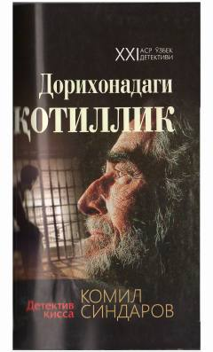

DQDorixonada sodir etilgan sirli qotillikni ochishga bag'ishlangan o'zbekcha detektiv qissa.
Mazkur detektiv qissada prokuratura tergovchilarining dorixonada sodir etilgan qотиллик ishini ochishdagi mashaqqatli меҳнати va kasbiy mahorati bayon etiladi. Asar muallifning huquqni muhofaza qilish organlaridagi faoliyati va hayotiy haqiqatlarga asoslangan bo'lib, o'quvchini mulohaza qilishga undaydi. Kitobda qonun ustuvorligi va adolatni o'rnatish yo'lidagi fidoiylik aks ettirilgan.